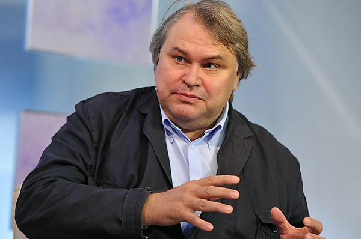

"Special Correspondent" (Spetsialny Korrespondent)

Born in Omsk. Studies journalism. Becomes a television correspondent in the late Soviet period, covering military and security topics.
Covers both Chechen wars from the federal forces' perspective. Wins state awards for his reporting. Builds a relationship with the security services that shapes his editorial approach.
Begins hosting "Spetsialny Korrespondent" on Russia-1 — a documentary series that frames domestic opponents, LGBTQ+ people, and Western-linked organizations as threats to Russia.
His documentary on "homosexual propaganda" airs in May 2013. The State Duma passes the "gay propaganda" law in June 2013. The pattern — film, then law — repeats across multiple topics.
Pivots to producing pro-war documentary content for Russia-1. EU and UK impose sanctions. He becomes one of the primary documentary voices normalizing the invasion for Russian audiences.
Pseudo-documentary format. His films about "sodomy" and "Nazis" air in the weeks before repressive legislation passes — every time. The coincidence is structural, not accidental. Mamontov provides the emotional preparation; the Duma provides the law. Interp.
Sanctioned since 2022. All designations based on publicly available official sanctions lists.
All claims in this dossier are based on open public sources. Facts marked Fact have direct primary sources. Marked Interp. are editorial assessments of documented events.